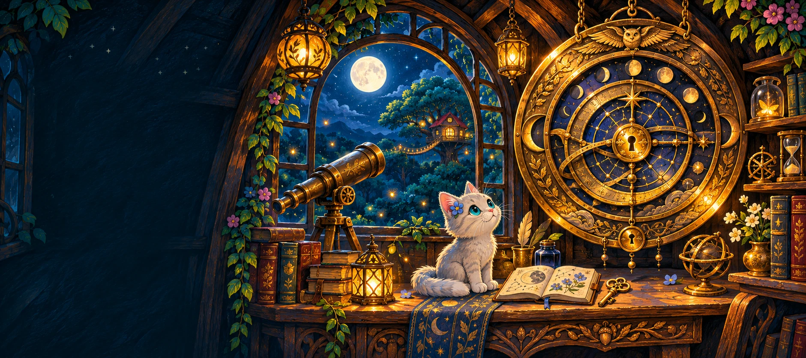
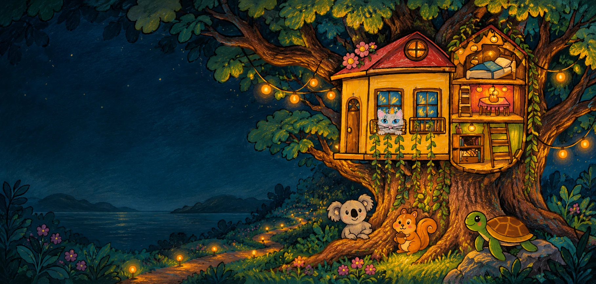
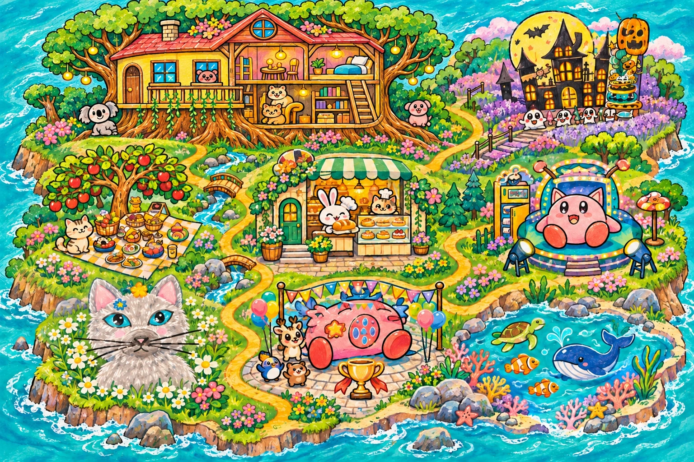
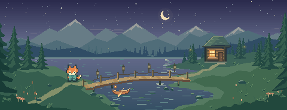
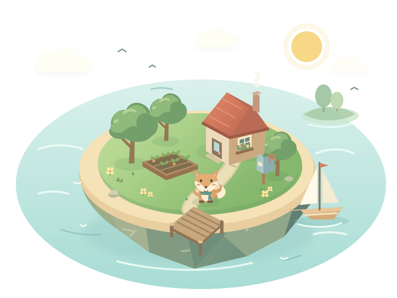
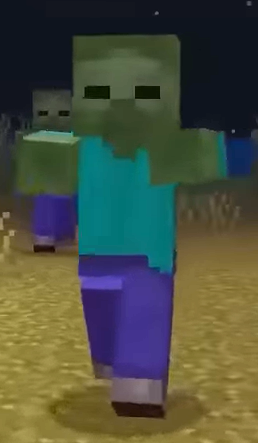
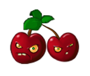

Lucas's game collection
Choose a game

The Moonkeeper’s Key Explore twelve puzzle rooms in two books. Decode the Moonkeeper’s lock, then bring the Dawn Bell back to life.
Lantern Night Walk around a 3D island, open the treehouse door, and turn the tracks to light up nine of Lucas's paintings.
Lucas's World Step inside nine of Lucas's paintings. Open the treehouse door, explore the island, and deliver letters to its residents.
萤火琴谷 · Firefly Vale Light the fox’s way home on your piano. Play along with Piano Adventures Level 1, starting on page 35. 中文 / English.
Lucas's Future Island · 未来小岛 Discover Dad's monthly gift, company baskets, and a journey through ups and downs. 中文 / English, with read-aloud and automatic saves. Cube Companions Explore five regions, catch and evolve cube creatures, and challenge powerful bosses. Touch controls and automatic saves included. Piano Garden vs Zombies Practice songs, hear demos, and defend the lawn with piano notes.
Block Garden Defense Plant PvZ heroes on Minecraft blocks and survive waves.
PvZ Guess Who Guess plants, zombies, fusions, and clues.